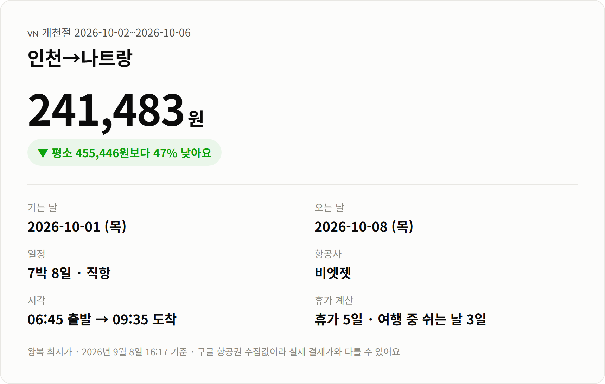
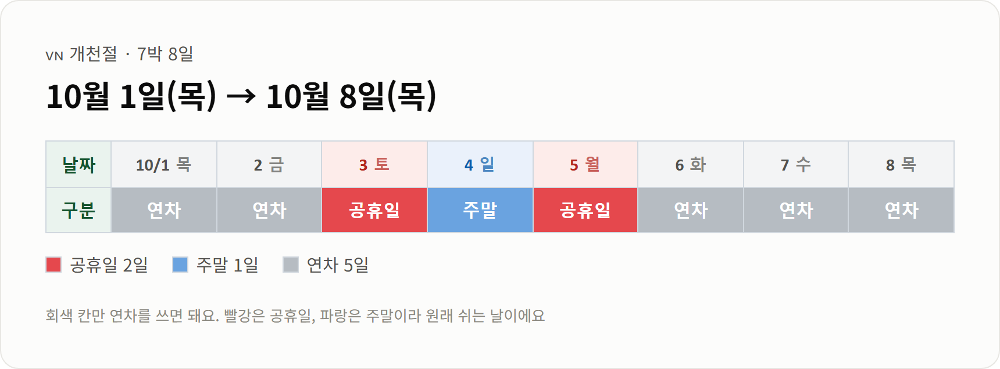
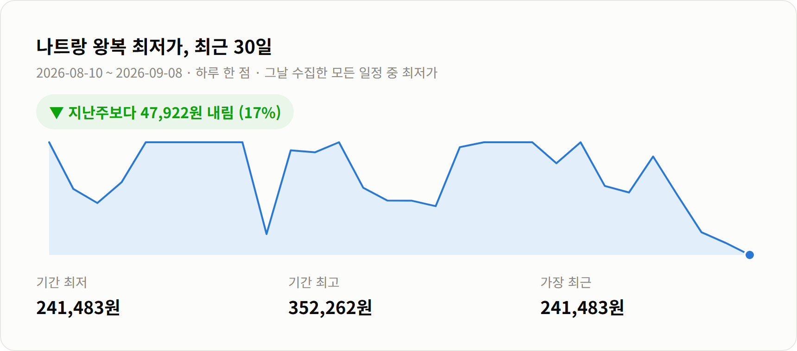

안녕하세요 :)
10월 초 연휴는 올해 좀 아쉬워요.
개천절이 토요일이라 하루가 그냥 묻히거든요.
그래도 10/5 월요일이 대체공휴일이라 붙일 구석은 있어요.
오늘은 나트랑을 봤는데,
가격이 최근 한 달 중 제일 낮은 자리에 와 있어요.
비엣젯 직항 왕복 241,483원이에요.
이 연휴 통상 시세가 455,446원이니까
절반 가까이 빠진 값이고요.

가는 편: 10/1(목) 06:45 → 09:35 도착
오는 편: 10/8(목)
운항: 비엣젯 직항
일정: 7박 8일
아침 6시 45분 출발이라 새벽에 나가야 해요.
대신 오전 9시 반이면 도착이라 첫날을 통째로 쓸 수 있어요.
비엣젯은 저비용항공사예요.
수하물이랑 기내식이 따로 붙으니 결제 전에 총액을 꼭 확인해보세요.
[사진 자리] 나트랑 해변 전경

솔직하게 말씀드리면 이건 8일짜리 일정이에요.
여행 기간 중 쉬는 날이 사흘뿐이라 나머지 닷새는 연차예요.
토·일에 10/5 대체공휴일이 붙는 게 전부거든요.
길게 쉬실 수 있는 분께 맞는 가격이에요.
반대로 며칠만 다녀오실 거면 이 값은 안 나와요.

최근 일주일 사이 17% 내렸어요.
그 전 주 최저가가 289,405원이었거든요.
한 달 평균이 615,144원인 걸 생각하면
지금이 유난히 낮게 잡힌 구간이에요.
[사진 자리] 나트랑 앞바다 섬 풍경
나트랑은 걸어 다니는 도시라기보단 바다 앞에 앉아 있는 곳이에요.
해변이 시내를 따라 길게 이어져서 숙소에서 나오면 바로 모래를 밟아요.
배로 나가면 섬이 여러 개 있어요.
스노클링 배가 하루에 두세 군데를 묶어 도는데,
물이 맑은 날은 그것만 해도 하루가 가더라고요.
[사진 자리] 나트랑 해산물 저녁
저녁은 해산물이에요.
수조에서 직접 고르면 그 자리에서 구워주는 집이 많고,
값이 서울 기준으론 좀 미안해질 정도예요.
바다만 보기 지겨우면 포나가르 참탑도 괜찮아요.
8세기부터 지어 올린 힌두 사원인데 시내에서 택시로 십 분이면 닿아요.
10월 나트랑은 낮 최고가 30도쯤이고 습도가 81%예요.
그리고 이 시기가 나트랑 우기의 한복판이에요.
비 때문에 배가 안 뜨는 날이 실제로 있어요.
섬 투어는 일정 앞쪽에 넣고 하루 정도는 비워두시는 걸 추천드려요.
가격이 이렇게까지 내려온 것도 사실 이 시기가 비수기라서예요.
날씨를 감수하는 대신 싸게 가는 셈이에요.
[사진 자리] 나트랑 바다의 아침 해
가격은 2026년 9월 8일 11:16 기준이에요.
구글 항공권에서 모은 값이라 실시간이 아니고,
실제 결제하실 때는 달라질 수 있어요.
다른 노선이랑 연휴별 가격은 여기에 정리해두고 있어요.
읽어주셔서 감사합니다 :)